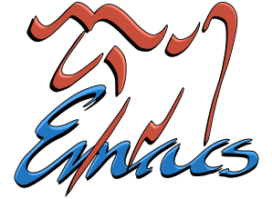
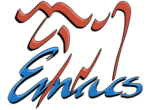

Robert Batzinger
Instructor
Contact Info:
Payap University Faculty of Science
Deprtment of Computer Science
Amphur Muang Chiang Mai 50000
Thailand
Webpage: http://cs.payap.ac.th/bob
Email:
Office location and phone:
Payap University
Mae Kao Campus, Room VV202
+66 (053) 241-255 x251
Robert Batzinger: Teaching Experience
Short courses taught
- Introduction to Statistical Computing with R
Bible studies lead
Courseware
Upcoming Courses
- CS110:Introduction to programming (C)
- CS355:Web-based Application Development (PHP)
Past Courses
- CS112: Object-oriented programming (Java)
- CS356: Mobile application development (Android)
- IUSB CSA201: Object-oriented programming (Ruby)
- IUSB CSA340: Introduction to Web Programming (PHP)
- PYU CS110: Introduction to computer programming (Pascal)
- PYU GE151: Introduction to computers (Basic)
Robert Batzinger: Research Activities
Current Research Projects
- Use of Thai version of Cucumber to design and test software
- Use of Yed as a Ruby case tool
- Development of Thai slides and handouts in Beamer compiled in XeLaTeX
- Redevelopment of a lost Thai Metafont
- Implementation of a Thai student retention system
- Improving freshmen computer science grades using Scratch and active learning techniques
Research Workspace:
Robert Batzinger: Curriculum vitae brevis
Experience
- Instructor, Payap University, Chiang Mai, Thailand
- Lab Supervisor, IUSB Informatics, South Bend, IN
- Asia-Pacific Regional Computer-Assisted Text Processing Consultant, United Bible Societies, Singapore
- Project Manager, Thailand Bible Society, Chiang Mai, Thailand
- Acting Dean of Science, Payap University, Chiang Mai, Thailand
- Post doctoral Fellow, UW Madison, WI
- Associate Research Professor, Johns Hopkins University, Baltimore, MD
Education
- MS Applied Mathematics and Computer Science, Indiana University - South Bend, IN
- Post Doctoral Fellowship, University of Wisconsin, Madison, WI
- PhD Pathobiology, Johns Hopkins University, Baltimore, MD
- SB Chemistry, Massachusetts Institute of Technology, Cambridge, MA


 



{kind=link}